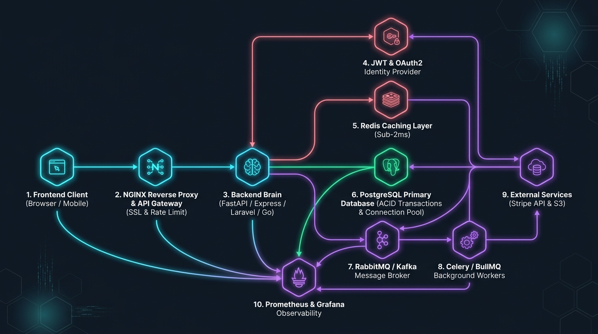

01. Complete Backend Topology Overview
A modern backend system does not rely on monolithic synchronous processing. Requests follow an asynchronous decoupled path:

Fig 1: Request Lifecycle Architecture across Ingress, Cache, DB, and Workers
02. Database Connection Pool Sizing Formula
A common beginner mistake is setting max_connections = 1000 in PostgreSQL. In reality, each PostgreSQL connection spawns an operating system process consuming ~10MB RAM and causing severe CPU cache thrashing during context switching.
To serve 5,000 concurrent web requests with only 17 database connections, deploy PgBouncer in Transaction Pooling mode. Web workers borrow a database connection solely for the duration of a single SQL transaction (2–10ms), returning it instantly to the pool.
03. The Transactional Outbox Pattern (Dual-Write Defense)
When an application must update a database and publish an event to RabbitMQ/Kafka, doing them sequentially introduces catastrophic failure modes:
- DB commits, but Broker network fails: Event is lost forever; downstream services never learn an order was placed.
- Broker publishes, but DB transaction rolls back: Ghost event; payment is charged or email sent for an order that does not exist.
04. Distributed Idempotency Keys in REST APIs
Network glitches cause mobile clients to retry requests automatically. Without an idempotency mechanism, a user double-tapping "Buy" will be charged twice.
05. Cache Stampede & The XFetch Algorithm
When a high-traffic cached key (e.g., homepage product list) expires, thousands of concurrent requests miss simultaneously and hit the database at the same millisecond. This is known as a Thundering Herd.
06. Dead Letter Queues (DLQ) & Poison Pill Quarantine
A "Poison Pill" is a malformed message that triggers an unhandled exception every time a worker attempts to process it. Without safety limits, the queue will retry the message indefinitely, eating CPU and starving legitimate tasks.
07. Zero-Downtime Expand-and-Contract Migrations
Never rename or drop database columns in a single migration script while production traffic is running. Instead, follow the 3-phase Parallel Change pattern:
Add the new column full_name alongside old first_name, last_name. Code writes to both columns, but still reads from old.
Backfill historic rows. Update code to read and write to full_name. All running pods now use the new column.
Safely drop old first_name, last_name columns without locking or crashing any running services.
Interactive Portfolio Studios
Continue your engineering journey across Talari Pradeep's specialized cloud studios: